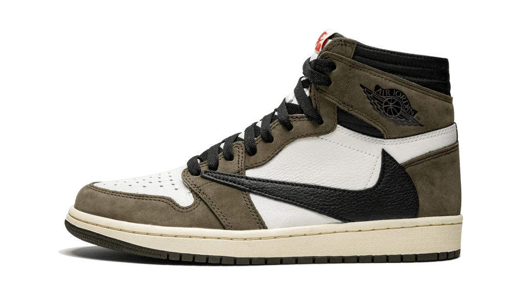

Je m'appelle Yako Lemeilleur ( oui mon nom est sympathique), j'ai 15 ans et je mesure 1m85. J'habite à la frontière suisse côté francais. Mes plus grandes passions dans la vie sont les jeux vidéos ainsi que les sneakers. Mes sneakers préférées sont les Air Jordan 1 High (voir ci dessous)
J'adore la musique, j'écoute de tout mais surtout du rap américain, mon artiste musicale préféré est Travis Scott (voir ci-dessous)
Ça c'est moi, oui j'ai un peu de moustache mais pas encore assez pour que je puisse la laisser pousser... lol

Je fais du sport de temps en temps et cette année, je vais me mettre à la muscu. Ce que je fais parcontre, c'est de l'esport, la compétition sur les jeux vidéos. Fortnite est le jeu sur lequel je fais ces compétitions
Je suis en classe de 1ere Générale, j'ai pris les spécialités :
C'est aussi la premiere année ou je passe des examens très très important, je parle évidemment du baccalauréat.. J'appréhende énormement les examens car je ne sais pas si je vais y arriver.
Plus tard, j'ai plusieurs idées d'études :
J'aimerais partir sur un DUT MMI (lien menant vers l'onisep qui explique ces études en détail) qui est un Diplome Universitaire Technologique, Métier du Multimedia et de l'Internet.
Le managemenent est aussi une branche d'étude qui m'intéresse beaucoup, le métier de Community Manager est aussi un métier que j'aimerais faire
Vous trouverez ci-dessous le lien menant vers le projet python que nous avons à réaliser.
PROJET PYTHON